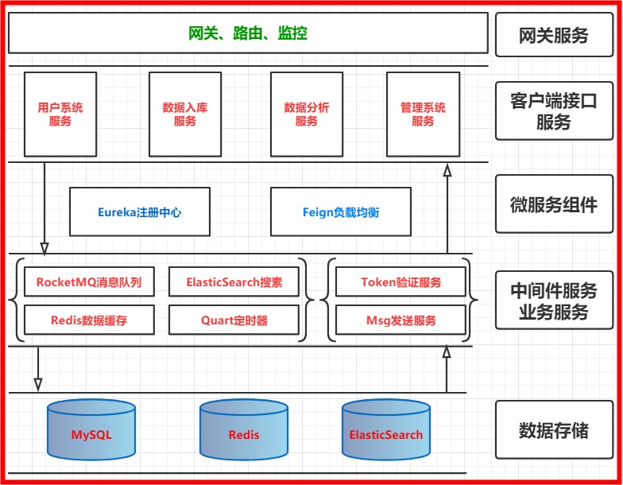
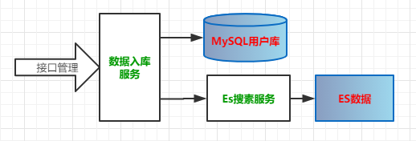
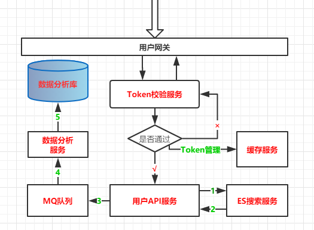
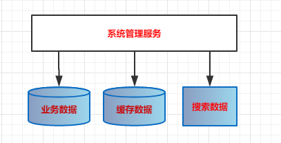
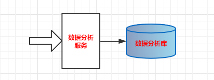
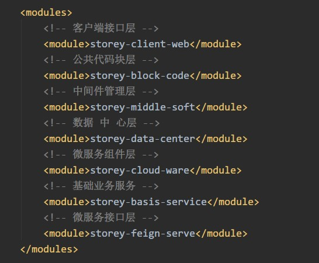

原文连接:https://www.cnblogs.com/cicada-smile/p/11769119.html
本文源码：GitHub·点这里 || GitEE·点这里
更新进度(共6节)：
02：业务架构设计，系统分层管理
一、业务架构设计
1、基础概念
服务的架构设计决定软件的业务支撑能力，清晰的业务设计可以帮助开发人员理解系统。在业务架构设计过程中，需要根据用户需求作为核心方向，根据用户需求确定产品设计、框架搭建、服务划分、数据库规划。如果需求比较单一，单个应用服务可以支撑，则不需要设计复杂的微服务系统，如果根据对业务的判断，会在一段时间内出现业务并发，则最好开始的时候就考虑业务的扩展性，架构的支撑能力。
2、案例架构图

基于该项目的架构设计，下面逐个描述一下业务设计。
二、业务流程
1、数据入库服务
- 流程图解

- 流程描述
1. 请求入库服务接口;
2. 搜索数据，通过搜索服务Feign接口写入ES服务器;
3. 相同的搜索数据，写入用户数据库;- 程序入口
所属代码包：mopsz-data-form
@RestController
@RequestMapping("/search/data")
public class SearchDataController {
// 调用搜索服务Feign接口
@Resource
private BookInfoEsFeign bookInfoEsFeign ;
@Resource
private BookInfoService bookInfoService ;
@RequestMapping("/batchSave")
public String batchSave (){
// 省略业务代码
}
}2、用户API服务
- 流程图解

- 流程描述
1. 用户请求进入，网关服务拦截;
2. 调用Token管理服务，验证用户的身份令牌，使用Redis存储Token;
3. 如果身份验证通过，则网关放行用户请求;
4. 执行用户搜索请求处理;
5、根据搜索条件，调用ES搜索服务，返回结果;
6、将用户的搜索动作进行封装，请求MQ服务;
7、MQ服务请消息转发到数据分析服务 ;
8、数据分析服务安装策略分析用户请求，存储分析结果;- 程序入口
(1)、网关拦截
所属代码包：mopsz-cloud-gateway
@Component
public class FilterConfig extends ZuulFilter {
public static final Logger LOGGER = LoggerFactory.getLogger(FilterConfig.class) ;
private static final String GET_TOKEN = "/token/getToken";
private static final String VERIFY_TOKEN = "/token/verifyToken";
private static final String REFRESH_TOKEN = "/token/refreshToken";
/**
* 拦截处理
*/
@Override
public Object run() throws ZuulException {
RequestContext requestContext = RequestContext.getCurrentContext() ;
try {
doTokenProcess (requestContext);
} catch (Exception e){
LOGGER.info("异常：{}",e.getMessage());
throw new ZuulException(e.getMessage(), 403, e.getMessage());
}
return null ;
}
public void doTokenProcess (RequestContext requestContext) throws Exception {
HttpServletRequest request = requestContext.getRequest() ;
String reqUri = request.getRequestURI() ;
if (!reqUri.contains(GET_TOKEN)) {
String token = request.getHeader("token") ;
boolean flag = userTokenFeign.refreshToken(token) ;
if (!flag){
throw new ServiceException("Token 校验失败") ;
}
LOGGER.info("Token 校验通过");
}
}
}(2)、Token管理
所属代码包：mopsz-basis-token
@RestController
@RequestMapping("/token")
public class UserTokenController implements UserTokenFeign {
@Resource
private UserTokenService tokenService ;
/**
* 获取Token
*/
@Override
@RequestMapping("/getToken")
public RespObject getToken (@RequestParam("userName") String userName,
@RequestParam("passWord") String passWord){
try {
String token = tokenService.getToken(userName,passWord) ;
return RespObject.ok().put(Constant.MAP_KEY,token) ;
} catch (Exception e){
e.printStackTrace();
return RespObject.error() ;
}
}
/**
* 校验Token
*/
@Override
@RequestMapping("/verifyToken")
public RespObject verifyToken(String token) {
try {
Integer userId = tokenService.verifyToken(token) ;
return RespObject.ok().put(Constant.MAP_KEY,userId) ;
} catch (Exception e){
e.printStackTrace();
return RespObject.error() ;
}
}
/**
* 刷新Token
*/
@Override
@RequestMapping("/refreshToken")
public boolean refreshToken(String token) {
try {
return tokenService.refreshToken(token) ;
} catch (Exception e){
e.printStackTrace();
return false ;
}
}
}(3)、搜索接口
所属代码包：mopsz-user-client
@RestController
@RequestMapping("/search/book/")
public class BookSearchController {
@Resource
private BookInfoEsFeign bookInfoEsFeign ;
@Resource
private UserSearchFeign userSearchFeign ;
/**
* 关键字全文搜索
*/
@RequestMapping("/getByKeyWord")
public List<EsBookInfo> getByKeyWord (@RequestParam("keyWord") String keyWord,
@RequestParam("userId") Integer userId){
// 搜索引擎执行
List<EsBookInfo> esBookInfoList = bookInfoEsFeign.getByKeyWord(keyWord) ;
// 执行异步分析
if (StringUtils.isNotEmpty(keyWord) && esBookInfoList != null){
KeySearchModel keySearchModel = new KeySearchModel() ;
keySearchModel.setUserId(userId);
keySearchModel.setKeyWord(keyWord);
keySearchModel.setSearchResult(esBookInfoList);
userSearchFeign.sendBookSearch(JsonUtil.objToJson(keySearchModel));
}
return esBookInfoList ;
}
}(4)、请求分析
所属代码包：mopsz-data-analy
@RestController
public class BookEsDataController implements BookEsAnalyFeign {
@Resource
private BookEsDataService bookEsDataService ;
@Override
public void sendBookEsMsg(String msgBody) {
bookEsDataService.saveBookEsData(msgBody);
}
}3、系统管理服务
- 流程图解

- 流程描述
整合流程基础SpringSecurity,JWT等组件开发。所属代码包：mopsz-admin-client。
1. 系统用户登录，安全配置：SecurityConfig ;
2. 登录成功处理：LoginSuccessHandler ;
3. 登录失败处理：LoginFailHandler ;
4. 系统服务具备管理：业务数据库，缓存数据，ES服务等功能 ;4、数据分析服务
- 流程图解

- 流程描述
所属代码包：mopsz-data-analy
1. 接收MQ服务转发数据分析请求 ;
2. 按照指定策略，分析数据，分析结果存储 ;三、系统分层管理
1、分层示意图

2、结构层次描述
- 公共代码块层
管理系统工具类、数据表结构实体类、Mapper层、Service服务层等，按照数据库服务规划划分，作为整个系统的公共依赖代码块。
- 数据管理层
管理数据入库服务API，数据分析服务API两个模块。
- 客户端接口层
管理用户服务API，后台系统服务API。
- 微服务接口层
微服务之间的调用采用Feign接口的方式，按照不同服务提供的Feign接口进行封装，在该层统一管理，进行服务间的请求调用。
- 通用业务服务层
管理通用Token服务，消息发送服务，作为系统共用的业务服务层。
- 中间件服务层
管理RocketMQ消息队列服务、Redis缓存服务、Quart定时器服务、ES搜索服务，提供统一的Feign服务接口。
- 微服务组件层
管理整个系统的网关拦截服务、Eureka服务注册和发现 等微服务基础组件。
四、源代码地址
GitHub·地址
https://github.com/cicadasmile/husky-spring-cloud
GitEE·地址
https://gitee.com/cicadasmile/husky-spring-cloud：业务架构设计，系统分层管理6.png)